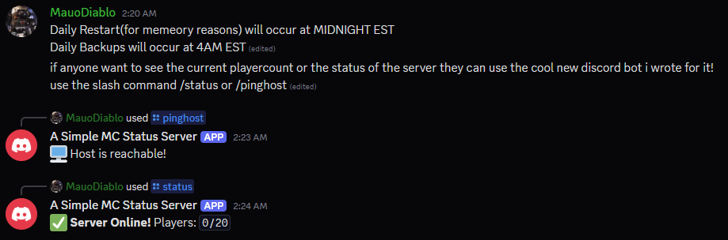
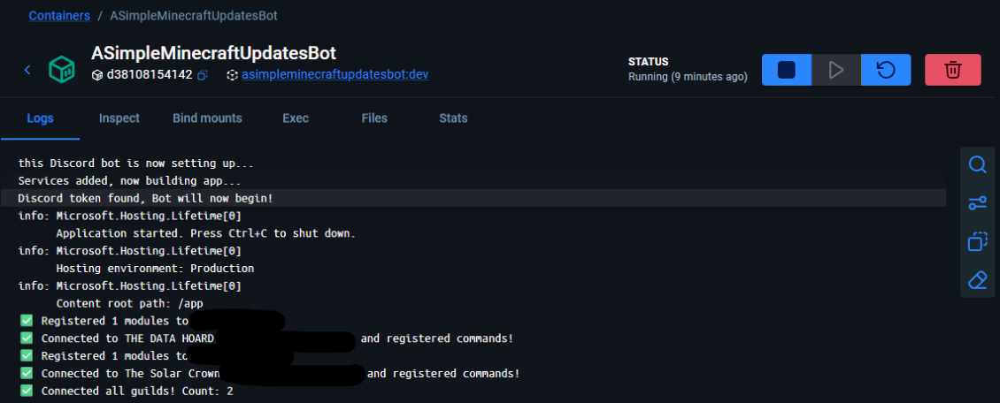

A Simple Minecraft Status Discord Bot
A containerized Discord bot built with .NET 8, featuring dynamic configuration and real-time server monitoring for home-lab environments.
Project Overview & Features
- Real-Time Querying: Instant server status checks using the MineStat library.
- Dynamic Setup: Configure IP, Port, and Notify Channels directly via Discord Slash Commands.
- Persistent State: Custom JSON-based storage system ensures settings survive container restarts.
- Environment Aware: Securely handles API tokens via
.envand environment variable injection.
Skills & Technologies Applied
Workflow & Tools
System Integration
Discord Live View

Live interaction showing the formatted status output in a server.
Docker Deployment

The .NET 8 runtime environment containerized for consistent deployment.
Dynamic Configuration Interface
[SlashCommand("setup", "Configure Minecraft settings")]
public async Task SetupCommandAsync(
string serverName, string ip, ushort port = 25565)
{
await DeferAsync(ephemeral: true);
// Persist settings to JSON via ConfigService
_configService.UpdateConfig(serverName, ip, port);
await FollowupAsync($"✅ **Settings Saved!** IP: `{ip}`");
}
This method allows admins to update the bot's target server IP and Port on the fly. The updated settings are passed to a configuration service which serializes them to a local JSON file, ensuring the bot remembers its setup even after a container reboot.
Server Status Query
[SlashCommand("status", "Query current server state")]
public async Task StatusCommandAsync()
{
await DeferAsync();
var status = await _mcService.GetFullStatus(_jsonService.Config);
if (status.IsOnline)
await FollowupAsync($"✅ **Online!** Players: `{status.CurrentOverMaxPlayers}`");
else
await FollowupAsync("❌ **Offline.** Check settings with /setup.");
}
This method triggers the core logic of the bot: it pulls the saved configuration, queries the Minecraft server via a dedicated service, and returns the current player count and status directly to the Discord channel for all users to see.